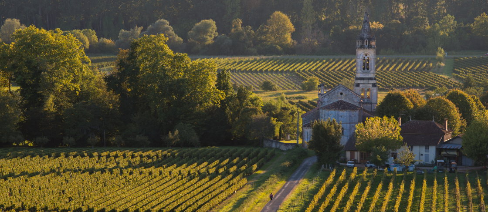
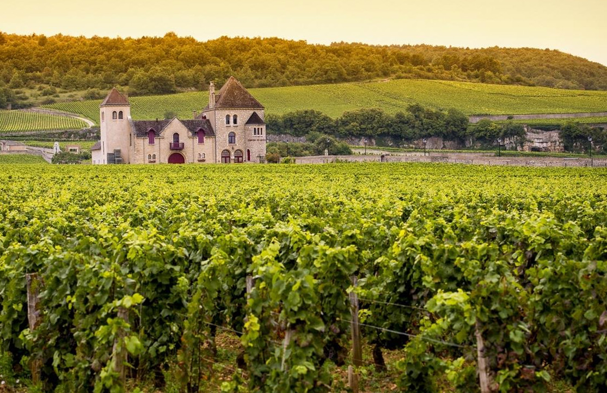
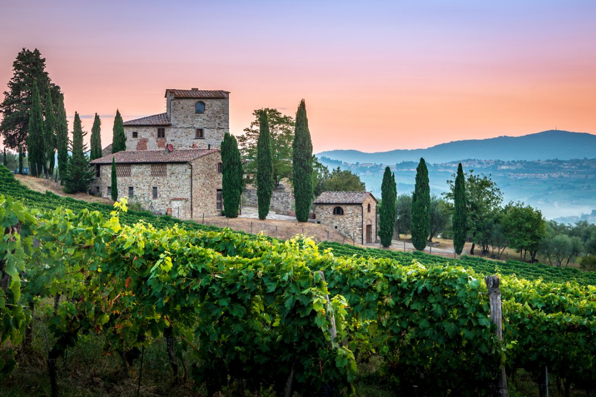
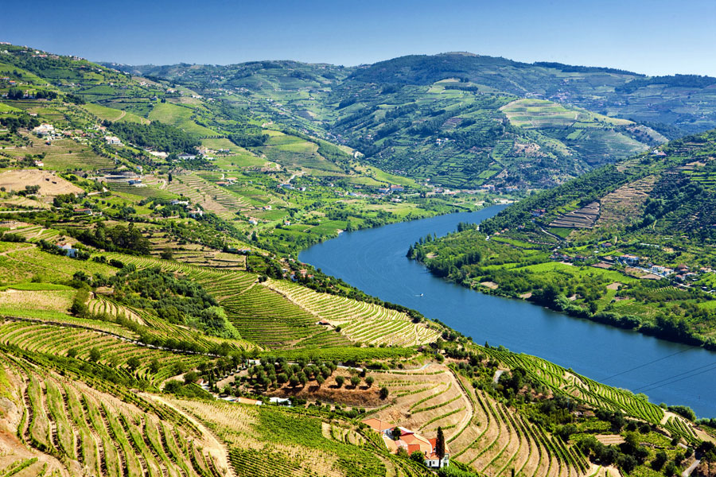

França
Champagne
Das grandes maisons aos pequenos récoltants-manipulants. Experiências em caves históricas, jantares harmonizados e acesso a cuvées de prestígio.
Private Journeys
Organizadas exclusivamente para encontrar produtores e experiências que não são abertas ao público.

França
Visitas privadas aos grandes Châteaux da margem esquerda e direita. Degustações em barrel rooms reservadas, jantares com os proprietários e acesso a safras que nem chegarão ao mercado.

França
Os climats mais prestigiados do mundo. Encontros com vignerons que produzem algumas centenas de garrafas por ano e que raramente recebem visitantes.
França
Das grandes maisons aos pequenos récoltants-manipulants. Experiências em caves históricas, jantares harmonizados e acesso a cuvées de prestígio.

Estados Unidos
O coração da viticultura americana. Visitas a cult wineries, tastings em allocation-only properties e jantares privados com winemakers.

Itália
Brunello, Barolo, Super Toscanos. Visitas a produtores lendários, trufas em Alba, jantares em vilas históricas e a dolce vita em sua expressão mais genuína.

Portugal
Das quintas históricas do Douro às novas expressões de Lisboa. Porto Vintage, vinhos de talha alentejanos e gastronomia portuguesa em sua forma mais autêntica.
As próximas journeys são reservadas exclusivamente para membros do círculo.
Solicitar Convite